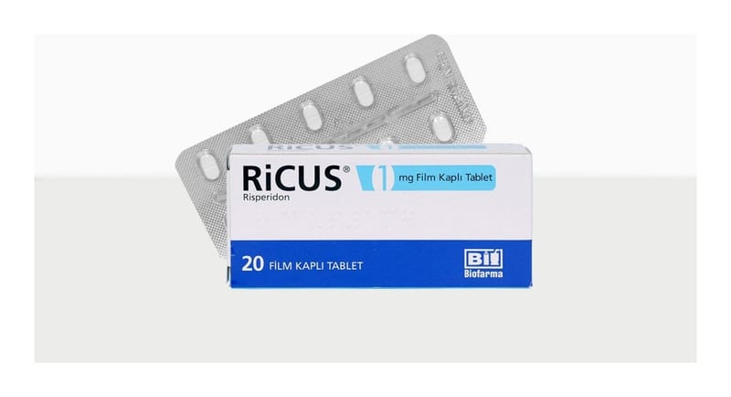

Ricus 1 mg Film Kaplı Tablet, 20 Adet

Ne için kullanılır
KT · Bölüm 1• RİCUS®etkin madde olarak her bir film ka plı tablette 1 mg risperidon içerir.
• RİCUS®beyaz renkli, bir yüzü çentikli, oblong film kaplı tablettir. 20 tablet içeren ambalajlar ile kullanıma sunulmaktadır. Tablet içerisinde sığır sütünden elde edilen laktoz Bu ilacı kullanmaya başlamadan önce bu KULLANMA TALİMATINI dikkatlice okuyunuz, çünkü sizin için önemli bilgiler içermektedir.
• Bu kullanma talimatını saklayınız. Daha sonra tekrar okumaya ihtiyaç duyabilirsiniz. • Eğer ilave sorularınız olursa, lütfen doktorunuza veya eczacınıza danışınız. • Bu ilaç kişisel olarak sizin için reçete edilmiştir, başkalarına vermeyiniz. • Bu ilacın kullanımı sırasında, doktora veya hastaneye gittiğinizde doktorunuza bu ilacı kullandığınızı söyleyiniz. • Bu talimatta yazılanlara aynen uyunuz. İlaç hakkında size önerilen dozun dışında yüksek veya düşük doz kullanmayınız.
monohidrat bulunmaktadır.
• RİCUS®antipsikotikler olarak adlandırılan ve bir çeşit ruhsal bozukluk (psikoz) durumunda kullanılan ilaç grubuna dahildir.
• RİCUS®aşağ ıdaki durumların tedavisinde kullanılmaktadır. • Halüsinasyon (olmayan bir şeyi görmek, işitmek veya hissetmek), kuruntu, zihin karışıklı ğı, saldırganlık, aşırı şüphecilik (paranoya), duygusal ve sosyal çekingenlik gibi düşünce, duygu ve/veya davranışlarını zı etkileyen durumların tedavisinde kullanılır. RİCUS®, ayrıca bu durumdaki kişilerin hissettiği ruhsal çöküntü, suçluluk duygusu, endişe ve gerginlik gibi belirtileri azaltır. • Bozulan ruhsal durumun dengelenmesi [ani gelişen ve uzun süreli rahatsızlıklarda; bipolar bozuklukta (ruhsal durumdaki zıt yönlü değişiklikler) gözlenen taşkınlık nöbeti belirtilerinin kontrol altına alınmasında; agresif veya diğer yıkıcı davranışların ön planda olduğu davranış ve diğer yıkıcı davranış bozukluklarının tedavisinde; çocuklarda ve ergenlerde otistik bozukluğa bağlı huzursuzlukların (agresif belirtiler, kendine zarar verme, öfke nöbetleri, ani duygu durum değişiklikleri) tedavisinde] için kullanıl ır.